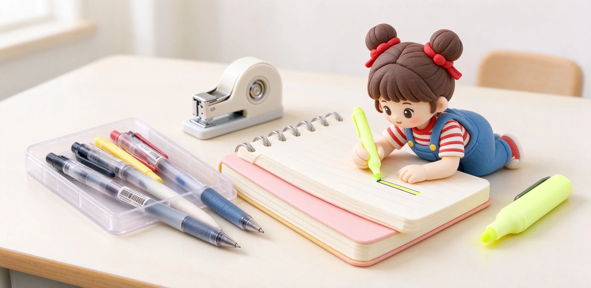
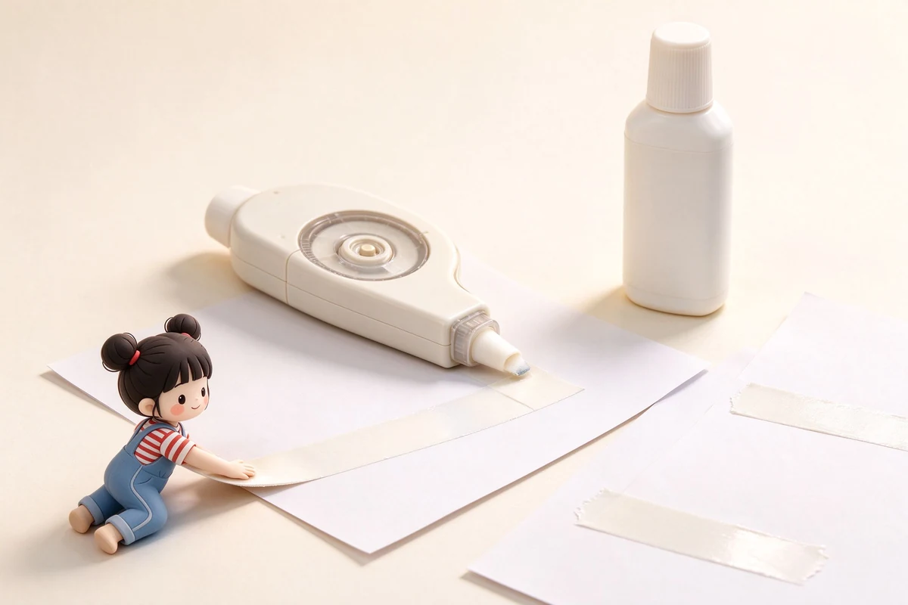

語意摘要：學生階段真正高頻使用的就那幾樣：順手的中性筆、一本筆記本、立可帶或修正貼、螢光筆，這幾樣值得投資好用款。而造型筆盒、超大量色筆組、功能華麗的機械式收納，多半開學一個月後就淪為擺設。預算有限時，把錢壓在「筆」與「紙」上，回報最高。
最該買：每天都會碰到的四樣
| 品項 | 建議 | 為什麼值得投資 |
|---|---|---|
| 日常筆 | 速乾中性筆 0.5mm 黑 | 一天寫幾小時，順不順手差很多 |
| 筆記本 | 配合上課習慣的尺寸版型 | 筆記本不合手，筆記就不會寫 |
| 修正用品 | 修正帶（5mm 可換蕊） | 改錯頻繁，立可白太慢又有味 |
| 重點標示 | 1–2 支低透色螢光筆 | 備課考試劃重點，不是越多越好 |
這四樣的共通點是「每天高頻」。一支筆寫起來卡手，你一天就煩了；所以寧可在大家公認好寫的幾款中性筆上多花一點，也不要貪便宜買一大盒不好寫的。
最不該買：看起來帥卻用不到的
- 超大容量造型筆盒：上課開闔很慢、還容易被同學傳，簡單筆袋最實際。
- 一整組 48 色、72 色筆：一般筆記只會用黑藍紅，其餘颜色永久新品。
- 功能一堆的萬用筆：又能寫又能擦又有燈，常常每個功能都不好用。
- 過度裝飾的貼紙、膠帶組：做手帳的人另說，一般學生最後都沒貼。
判斷標準很簡單：這個東西我上禮拜用過嗎？如果沒有，就是買來滿足開學儀式感的，別下单。

不同階段，重點不一樣
國高中：考試與筆記為主
這個階段書寫量大、又常考試，重點是速乾、不暈的黑筆與一支穩定的自動鉛筆（塗卡與畫圖用）。筆記本以好攜帶、便宜可棄為主，不用太講究。
大學：筆記型電腦混合書寫
很多人上課改用電腦記錄，手寫需求下降，反而需要一支簽名、填表用的筆與一本随手記靈感的小本子。文具預算可以轉向「一支好寫的鋼筆或質感筆記本」犒賞自己。
一個不後悔的開學預算法
- 先列出上學期真正用到見底的文具，那些才回購。
- 把一半預算壓在筆與筆記本上。
- 修正帶、螢光筆等耗材買可換蕊或補充包，長期省。
- 剩下的預算，再考慮一樣讓自己開心的小獎勵。
最好的學生文具清單，是「用過一學期」的清單，不是開學前憑想像列的。下學期你會更知道自己需要什麼。
耗材怎麼買最省：補充包哲學
學生文具很多是耗材：筆芯、修正帶內蕊、螢光筆。聰明的花法是「本體買好一點，耗材買補充包」。筆選可換蕊的款式，之後只買筆蕊，長期比整支丟掉省一大截；修正帶選可換卡匣的，同理。
學期中一次把常用的黑筆蕊、修正帶內蕊買齊，放一盒在書桌抽屜，就不會筆突然沒墨時慌張衝便利商店買貴。
常見問題 FAQ
開學最該優先買什麼？
每天高頻使用的四樣：好寫的速乾中性筆、合手的筆記本、可換蕊的修正帶、一兩支螢光筆。這些直接影響上課體驗，值得投資。
哪些文具最容易浪費錢？
超大造型筆盒、48 色以上整組筆、功能複雜的萬用筆，以及過量的貼紙膠帶。它們看起來療癒，多數一個月後就塵封。
中性筆要買很貴的嗎？
不必，但值得在公認好寫的幾款間選一支順手的。一天寫幾小時，卡手的筆很快就會讓你不想寫字。
大學還需要買一堆文具嗎？
若上課改用電腦記錄，手寫需求大降。留一支簽名填表的筆與一本小本子即可，預算可轉向犒賞自己的質感筆記或鋼筆。
修正帶要選哪種？
學生改錯頻繁，選 5mm 寬、可換蕊的一般型最划算；筆型款適合帶出門但容量小，可視需求混搭。
資料來源與核實依據
- How to choose the perfect pen?（鋼筆、滾珠、原子筆、自動鉛筆特性）（Caran d'Ache）
- 寫好硬筆字該如何選書寫工具（中性筆優缺點）（中國製筆協會）
- MONO CF 修正帶（4.2／5／6mm × 8m、可換蕊）（Tombow 蜻蜓）
相關文章推薦

中性筆是什麼？膠筆跟原子筆、鋼珠筆的差別與選購重點
中性筆就是水性凝膠墨水的筆：介在原子筆的油跟鋼珠筆的水之間，寫起來順、顏色飽和，一支大概 25 到 65 元，是台灣學生跟上班族最常用的日常筆。

自動鉛筆怎麼選？0.3／0.5／0.7mm、搖搖筆與不斷芯機構
自動鉛筆規格看兩件事：筆芯口徑（0.3／0.5／0.7／0.9mm）與出芯機構（按壓、搖搖、自動旋轉）。一般書寫抓 0.5mm，畫圖抓 0.3mm，考試最常見的就是 0.5mm 加一支便宜耐摔的款。

修正帶跟立可白哪個好？修正用品優缺點與貼合平整技巧
多數日常改錯，修正帶已經贏過立可白：貼完立刻能寫、沒有異味、不流動；立可白只剩下修表面髒汙與特殊筆觸的小舞台。